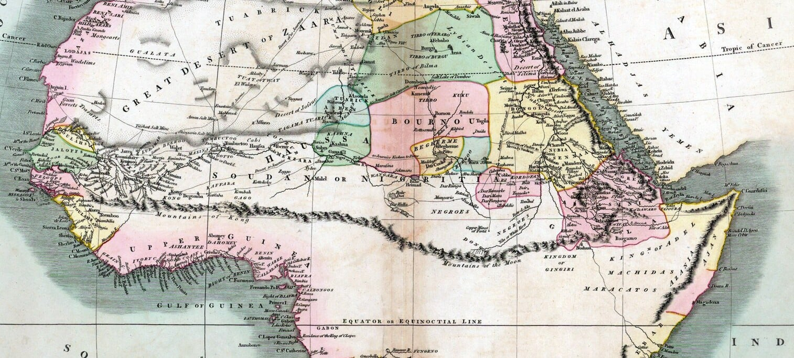

1798년, 당시 저명한 지리학자 제임스 레넬은 자신이 주장하던
아프리카 강이 흐르는 방향에 대한 이론을 뒷받침하기 위해
아프리카 대륙을 가로지르는 가상의 산맥인 콩 산맥을 창조했다.
문제는 이 사람 명성이 워낙 대단해서 이게 당시 유럽은 물론이고
아시아까지 전해져서 거의 모든 세계 지도에 표기되는 상황이 벌어졌다.
그러다 1890년대 후반, 해당 위치에 산맥이 없다는 게 정식으로 확인.
이후 가상의 산맥인 콩 산맥은 세계 지도에서 점차 사라지게 됐다.
댓글
수집 당시 댓글 10개
바보도알수있게 · 19 시간 전
고함량 · 19 시간 전
콩 까지마
고추건조기 · 19 시간 전
산맥 너머에 킹콩이 살아서 콩 산맥?
· nesy · 9 시간 전
nullpoint · 17 시간 전
콩까지마
콩까지마
· 겨드랑이의습격 · 6 시간 전
이게 영포티 갱뱅문화에서 온 은어라면서? ㄹㅇ임?
· 빙하위의북극곰 · 4 시간 전
영포티나 할법한 망상인데
· Veiner · 2 시간 전
갱뱅문화인지는 모르겠는데 00년대까지는 성관계의 은어로 쓰였던 말 맞음. 홍진호선수 놀릴때는 반반 섞였겠지.
그때 소설같은거 보면 가끔 나온다. 난 성인되고 월야환담 보다가 나와서 찾아보고 알았음
SQ · 7 시간 전
아프리카에 산맥있는 상상함 ㅋㅋ 그런데 어림도 없지 유럽침략의 방패 콩고분지밀림 입갤 ㅋㅋ
개붕야호 · 1 시간 전
1890년대에 우연히도 유럽열강들이 아프리카 식민쟁탈중이었다고하네요~